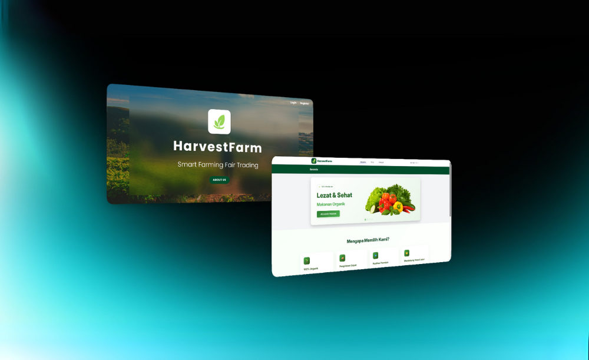
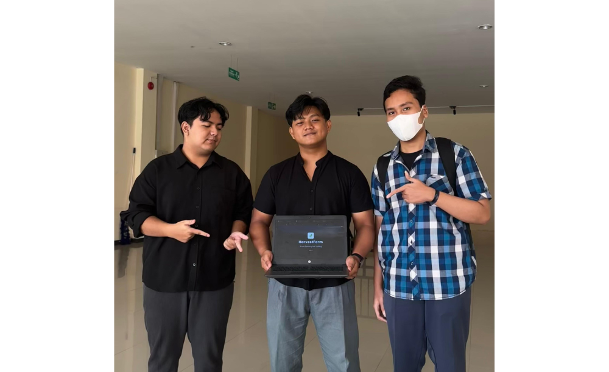
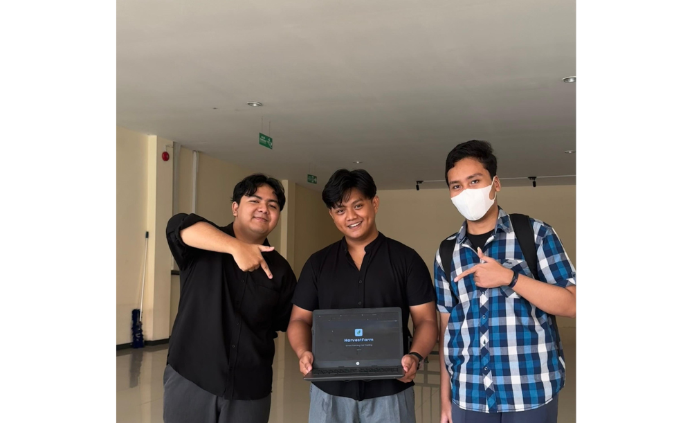

What Is HarvestFarm ?
HarvestFarm is a disruptive digital platform meticulously engineered to empower small-scale farmers by enabling direct market access, agricultural education, and transparent financing solutions. It’s not just an app—it’s a movement to dismantle the exploitative grip of middlemen and to revitalize the agricultural economy in Indonesia through smart, sustainable innovation.

What Problem Does It Solve?
The agricultural sector in Indonesia—particularly for smallholder farmers—faces multiple structural and economic challenges, including:
- Dependence on Middlemen (Tengkulak)
Farmers are trapped in exploitative "ijon" practices, where they must accept capital in advance with conditions to sell harvests at unfairly low prices. - Limited Access to Broader Markets
More than 70% of farmers rely on intermediaries, lacking a direct channel to reach consumers. - Lack of Real-Time Market Data
Around 60% of farmers have no visibility into real-time prices, leaving them unable to negotiate or plan effectively. - Scarcity of Fair and Flexible Financing
Farmers struggle to access capital from cooperatives or banks, being forced to turn to predatory sources. - Low Technological Adoption
With only 20% of farmers using modern technology, productivity and scalability remain stagnant. - Consumer Inaccessibility to Fresh Produce
Consumers face inflated prices due to long, inefficient supply chains—yet farmers still remain underpaid.
The Game-Changing Solution
HarvestFarm Web introduces a comprehensive, technology-driven solution that:
- Connects Farmers and Consumers Directly
Through a centralized web marketplace, farmers sell directly without middlemen, earning fairer prices. - Provides Real-Time Pricing Tools
A dynamic pricing algorithm displays up-to-date, location-based market prices, giving farmers the power to negotiate and plan intelligently. - Offers Transparent, Easy Financing
HarvestFarm partners with cooperatives to provide microloans with flexible terms, bypassing exploitative lenders. - Delivers Business Intelligence with Purchase History & Sales Analytics
- Farmers and buyers can track transactions, download reports, and monitor payment history.
- Built-in sales performance graphs allow users to visualize trends, identify top-performing products, and make strategic decisions.
- Empowers Users with Education & Training
The platform includes modules for digital literacy, agribusiness management, and marketing strategy. - Simplifies E-Commerce Operations
HarvestFarm supports QRIS, bank transfers, e-wallets, and seamless logistics tracking for both parties.
What Results Has the Application Delivered?
The implementation of HarvestFarm Web has generated significant impact across the agricultural ecosystem. Usability testing demonstrated a 100% task success rate, confirming the platform’s intuitive design and user-centric navigation. Both farmers and consumers reported high satisfaction scores, averaging between 4.4 to 4.7 out of 5, particularly praising the simplicity, clarity, and reliability of core features such as registration, ordering, and payment.
More over, the platform has empowered farmers to increase their income by up to 30%, thanks to the elimination of intermediary costs and the ability to set fair market prices. Through the integration of Purchase History dashboards and real-time Sales Graphs, users gained greater control over their financial data—allowing them to track performance, identify trends, and optimize business strategies. The added transparency and access to performance metrics enabled both parties to make smarter, data-informed decisions.
Additionally, HarvestFarm Web strengthens progress toward multiple Sustainable Development Goals (SDGs), notably Zero Hunger, Decent Work and Economic Growth, and Responsible Consumption and Production. It not only supports rural livelihoods but also ensures that consumers gain access to fresher, more affordable produce—creating a more equitable, efficient, and resilient agricultural system for all stakeholders.
 
HarvestFarm Web is not just a digital tool—it’s a movement to reshape agricultural equity, amplify smallholder voices, and build a future where technology empowers, not exploits.